Example Codes and Miniapps
This page provides a brief overview of MFEM's example codes and miniapps. For
detailed documentation of the MFEM sources, including the examples, see the
online Doxygen documentation,
or the doc directory in the distribution.
The goal of the example codes is to provide a step-by-step introduction to MFEM in simple model settings. The miniapps are more complex, and are intended to be more representative of the advanced usage of the library in physics/application codes. We recommend that new users start with the example codes before moving to the miniapps.
Clicking on any of the categories below displays examples and miniapps that contain the described feature. All examples support (arbitrarily) high-order meshes and finite element spaces. The numerical results from the example codes can be visualized using the GLVis visualization tool (based on MFEM). See the GLVis website for more details.
Users are encouraged to submit any example codes and miniapps that they have created and
would like to share.
Contact a member of the MFEM team to report
bugs
or post questions or comments.
Application (PDE)
Finite Elements
Discretization
Solver
Example 1: Laplace Problem

This example code demonstrates the use of MFEM to define a simple isoparametric finite element discretization of the Laplace problem −Δu=1
The example highlights the use of mesh refinement, finite element grid functions, as well as linear and bilinear forms corresponding to the left-hand side and right-hand side of the discrete linear system. We also cover the explicit elimination of essential boundary conditions, static condensation, and the optional connection to the GLVis tool for visualization.
The example has a serial (ex1.cpp), a parallel (ex1p.cpp), and HPC versions: performance/ex1.cpp, performance/ex1p.cpp. It also has a PETSc modification in examples/petsc , a PUMI modification in examples/pumi and a Ginkgo modification in examples/ginkgo.
Example 2: Linear Elasticity
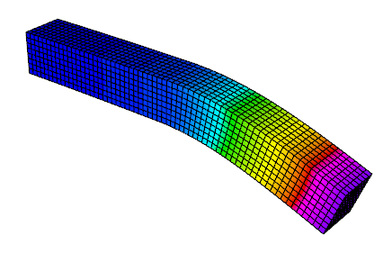
This example code solves a simple linear elasticity problem describing a multi-material cantilever beam. Specifically, we approximate the weak form of −div(σ(u))=0
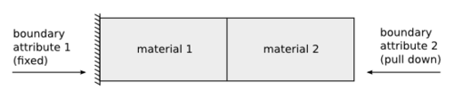
The example demonstrates the use of high-order and NURBS vector finite element spaces with the linear elasticity bilinear form, meshes with curved elements, and the definition of piece-wise constant and vector coefficient objects. Static condensation is also illustrated.
The example has a serial (ex2.cpp) and a parallel (ex2p.cpp) version. It also has a PETSc modification in examples/petsc and a PUMI modification in examples/pumi. We recommend viewing Example 1 before viewing this example.
Example 3: Definite Maxwell Problem
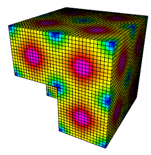
This example code solves a simple 3D electromagnetic diffusion problem corresponding to the second order definite Maxwell equation ∇×∇×E+E=f
The example demonstrates the use of H(curl) finite element spaces with the curl-curl and the (vector finite element) mass bilinear form, as well as the computation of discretization error when the exact solution is known. Static condensation is also illustrated.
The example has a serial (ex3.cpp) and a parallel (ex3p.cpp) version. It also has a PETSc modification in examples/petsc. We recommend viewing examples 1-2 before viewing this example.
Example 4: Grad-div Problem
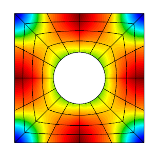
This example code solves a simple 2D/3D H(div) diffusion problem corresponding to the second order definite equation −grad(αdiv(F))+βF=f
The example demonstrates the use of H(div) finite element spaces with the grad-div and H(div) vector finite element mass bilinear form, as well as the computation of discretization error when the exact solution is known. Bilinear form hybridization and static condensation are also illustrated.
The example has a serial (ex4.cpp) and a parallel (ex4p.cpp) version. It also has a PETSc modification in examples/petsc. We recommend viewing examples 1-3 before viewing this example.
Example 5: Darcy Problem
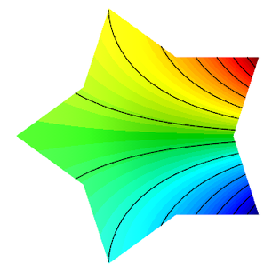
This example code solves a simple 2D/3D mixed Darcy problem corresponding to the saddle point system ku+gradp=f−divu=g
The example demonstrates the use of the BlockMatrix and BlockOperator classes, as well as the collective saving of several grid functions in VisIt and ParaView formats.
The example has a serial (ex5.cpp) and a parallel (ex5p.cpp) version. It also has a PETSc modification in examples/petsc. We recommend viewing examples 1-4 before viewing this example.
Example 6: Laplace Problem with AMR
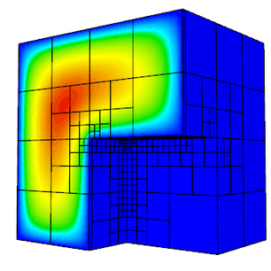
This is a version of Example 1 with a simple adaptive mesh refinement loop. The problem being solved is again the Laplace equation −Δu=1
The example demonstrates MFEM's capability to work with both conforming and nonconforming refinements, in 2D and 3D, on linear, curved and surface meshes. Interpolation of functions from coarse to fine meshes, as well as persistent GLVis visualization are also illustrated.
The example has a serial (ex6.cpp) and a parallel (ex6p.cpp) version. It also has a PETSc modification in examples/petsc and a PUMI modification in examples/pumi. We recommend viewing Example 1 before viewing this example.
Example 7: Surface Meshes
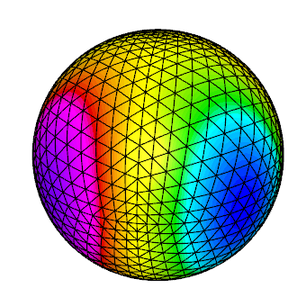
This example code demonstrates the use of MFEM to define a triangulation of a unit sphere and a simple isoparametric finite element discretization of the Laplace problem with mass term, −Δu+u=f.
The example highlights mesh generation, the use of mesh refinement, high-order meshes and finite elements, as well as surface-based linear and bilinear forms corresponding to the left-hand side and right-hand side of the discrete linear system. Simple local mesh refinement is also demonstrated.
The example has a serial (ex7.cpp) and a parallel (ex7p.cpp) version. We recommend viewing Example 1 before viewing this example.
Example 8: DPG for the Laplace Problem
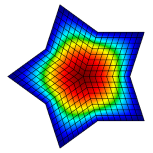
This example code demonstrates the use of the Discontinuous Petrov-Galerkin (DPG) method in its primal 2x2 block form as a simple finite element discretization of the Laplace problem −Δu=f
The example highlights the use of interfacial (trace) finite elements and spaces, trace face integrators and the definition of block operators and preconditioners.
The example has a serial (ex8.cpp) and a parallel (ex8p.cpp) version. We recommend viewing examples 1-5 before viewing this example.
Example 9: DG Advection
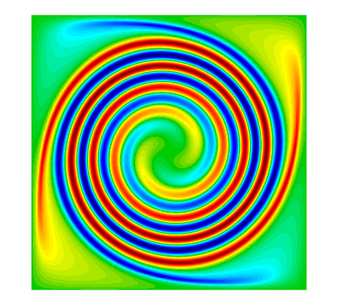
This example code solves the time-dependent advection equation ∂u∂t+v⋅∇u=0,
The example demonstrates the use of Discontinuous Galerkin (DG) bilinear forms in MFEM (face integrators), the use of explicit and implicit (with block ILU preconditioning) ODE time integrators, the definition of periodic boundary conditions through periodic meshes, as well as the use of GLVis for persistent visualization of a time-evolving solution. The saving of time-dependent data files for external visualization with VisIt and ParaView is also illustrated.
The example has a serial (ex9.cpp) and a parallel (ex9p.cpp) version. It also has a SUNDIALS modification in examples/sundials , a PETSc modification in examples/petsc, and a HiOp modification in examples/hiop.
Example 10: Nonlinear Elasticity
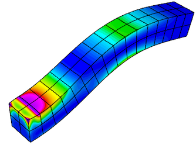
This example solves a time dependent nonlinear elasticity problem of the form dvdt=H(x)+Sv,dxdt=v,
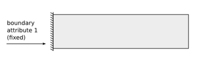
The example demonstrates the use of nonlinear operators, as well as their implicit time integration using a Newton method for solving an associated reduced backward-Euler type nonlinear equation. Each Newton step requires the inversion of a Jacobian matrix, which is done through a (preconditioned) inner solver.
The example has a serial (ex10.cpp) and a parallel (ex10p.cpp) version. It also has a SUNDIALS modification in examples/sundials and a PETSc modification in examples/petsc. We recommend viewing examples 2 and 9 before viewing this example.
Example 11: Laplace Eigenproblem
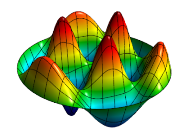
This example code demonstrates the use of MFEM to solve the eigenvalue problem −Δu=λu
We compute a number of the lowest eigenmodes by discretizing the Laplacian and Mass operators using a finite element space of the specified order, or an isoparametric/isogeometric space if order < 1 (quadratic for quadratic curvilinear mesh, NURBS for NURBS mesh, etc.)
The example highlights the use of the LOBPCG eigenvalue solver together with the BoomerAMG preconditioner in HYPRE, as well as optionally the SuperLU or STRUMPACK parallel direct solvers. Reusing a single GLVis visualization window for multiple eigenfunctions is also illustrated.
The example has only a parallel (ex11p.cpp) version. We recommend viewing Example 1 before viewing this example.
Example 12: Linear Elasticity Eigenproblem
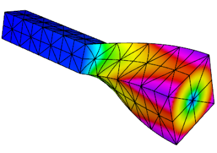
This example code solves the linear elasticity eigenvalue problem for a multi-material cantilever beam. Specifically, we compute a number of the lowest eigenmodes by approximating the weak form of −div(σ(u))=λu,
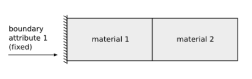
The example highlights the use of the LOBPCG eigenvalue solver together with the BoomerAMG preconditioner in HYPRE. Reusing a single GLVis visualization window for multiple eigenfunctions is also illustrated.
The example has only a parallel (ex12p.cpp) version. We recommend viewing examples 2 and 11 before viewing this example.
Example 13: Maxwell Eigenproblem
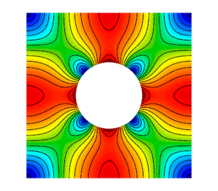
This example code solves the Maxwell (electromagnetic) eigenvalue problem ∇×∇×E=λE
We compute a number of the lowest nonzero eigenmodes by discretizing the curl curl operator using a Nedelec finite element space of the specified order in 2D or 3D.
The example highlights the use of the AME subspace eigenvalue solver from HYPRE, which uses LOBPCG and AMS internally. Reusing a single GLVis visualization window for multiple eigenfunctions is also illustrated.
The example has only a parallel (ex13p.cpp) version. We recommend viewing examples 3 and 11 before viewing this example.
Example 14: DG Diffusion
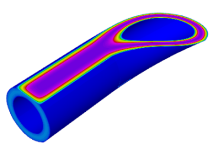
This example code demonstrates the use of MFEM to define a discontinuous Galerkin (DG) finite element discretization of the Laplace problem −Δu=1
The example has a serial (ex14.cpp) and a parallel (ex14p.cpp) version. We recommend viewing examples 1 and 9 before viewing this example.
Example 15: Dynamic AMR
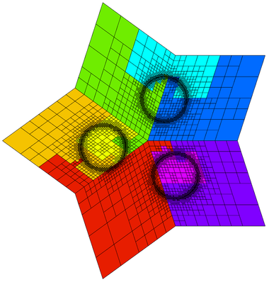
Building on Example 6, this example demonstrates dynamic adaptive mesh refinement. The mesh is adapted to a time-dependent solution by refinement as well as by derefinement. For simplicity, the solution is prescribed and no time integration is done. However, the error estimation and refinement/derefinement decisions are realistic.
At each outer iteration the right hand side function is changed to mimic a time dependent problem. Within each inner iteration the problem is solved on a sequence of meshes which are locally refined according to a simple ZZ error estimator. At the end of the inner iteration the error estimates are also used to identify any elements which may be over-refined and a single derefinement step is performed. After each refinement or derefinement step a rebalance operation is performed to keep the mesh evenly distributed among the available processors.
The example demonstrates MFEM's capability to refine, derefine and load balance nonconforming meshes, in 2D and 3D, and on linear, curved and surface meshes. Interpolation of functions between coarse and fine meshes, persistent GLVis visualization, and saving of time-dependent fields for external visualization with VisIt are also illustrated.
The example has a serial (ex15.cpp) and a parallel (ex15p.cpp) version. We recommend viewing examples 1, 6 and 9 before viewing this example.
Example 16: Time Dependent Heat Conduction
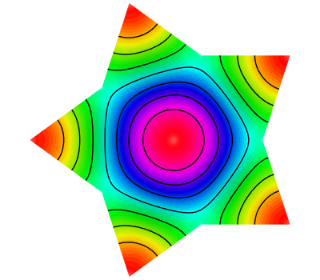
This example code solves a simple 2D/3D time dependent nonlinear heat conduction problem dudt=∇⋅(κ+αu)∇u
This example demonstrates both implicit and explicit time integration as well as a single Picard step method for linearization. The saving of time dependent data files for external visualization with VisIt is also illustrated.
The example has a serial (ex16.cpp) and a parallel (ex16p.cpp) version. We recommend viewing examples 2, 9, and 10 before viewing this example.
Example 17: DG Linear Elasticity
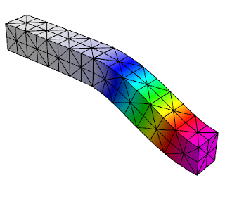
This example code solves a simple linear elasticity problem describing a multi-material cantilever beam using symmetric or non-symmetric discontinuous Galerkin (DG) formulation.
Specifically, we approximate the weak form of −div(σ(u))=0
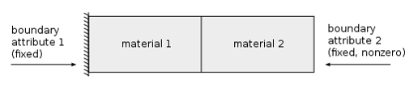
The example demonstrates the use of high-order DG vector finite element spaces with the linear DG elasticity bilinear form, meshes with curved elements, and the definition of piece-wise constant and function vector-coefficient objects. The use of non-homogeneous Dirichlet b.c. imposed weakly, is also illustrated.
The example has a serial (ex17.cpp) and a parallel (ex17p.cpp) version. We recommend viewing examples 2 and 14 before viewing this example.
Example 18: DG Euler Equations
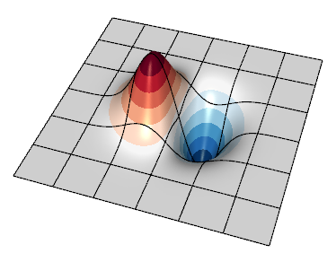
This example code solves the compressible Euler system of equations, a model nonlinear hyperbolic PDE, with a discontinuous Galerkin (DG) formulation. The primary purpose is to show how a transient system of nonlinear equations can be formulated in MFEM. The equations are solved in conservative form
∂u∂t+∇⋅F(u)=0
with a state vector u=[ρ,ρv0,ρv1,ρE], where ρ is the density, vi is the velocity in the ith direction, E is the total specific energy, and H=E+p/ρ is the total specific enthalpy. The pressure, p is computed through a simple equation of state (EOS) call. The conservative hydrodynamic flux F in each direction i is
Fi=[ρvi,ρv0vi+pδi,0,ρv1vi+pδi,1,ρviH]
Specifically, the example solves for an exact solution of the equations whereby a vortex is transported by a uniform flow. Since all boundaries are periodic here, the method's accuracy can be assessed by measuring the difference between the solution and the initial condition at a later time when the vortex returns to its initial location.
Note that as the order of the spatial discretization increases, the timestep
must become smaller. This example currently uses a simple estimate derived by
Cockburn and Shu
for the 1D RKDG method. An additional factor can be tuned by passing the --cfl
(or -c shorter) flag.
The example demonstrates user-defined bilinear and nonlinear form integrators for systems of equations that are defined with block vectors, and how these are used with an operator for explicit time integrators. In this case the system also involves an external approximate Riemann solver for the DG interface flux. It also demonstrates how to use GLVis for in-situ visualization of vector grid functions.
The example has a serial (ex18.cpp) and a parallel (ex18p.cpp) version. We recommend viewing examples 9, 14 and 17 before viewing this example.
Example 19: Incompressible Nonlinear Elasticity
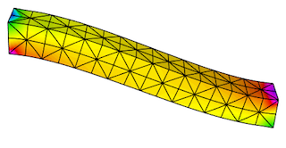
This example code solves the quasi-static incompressible nonlinear hyperelasticity equations. Specifically, it solves the nonlinear equation ∇⋅σ(F)=0
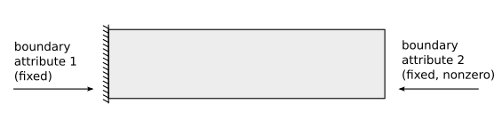
This formulation requires solving the saddle point system [KBTB0][ΔuΔp]=[RuRp]
The example demonstrates how to solve nonlinear systems of equations that are defined with block vectors as well as how to implement specialized block preconditioners for use in iterative solvers.
The example has a serial (ex19.cpp) and a parallel (ex19p.cpp) version. We recommend viewing examples 2, 5 and 10 before viewing this example.
Example 20: Symplectic Integration of Hamiltonian Systems
This example demonstrates the use of the variable order, symplectic time integration algorithm. Symplectic integration algorithms are designed to conserve energy when integrating systems of ODEs which are derived from Hamiltonian systems.
Hamiltonian systems define the energy of a system as a function of time (t), a set of generalized coordinates (q), and their corresponding generalized momenta (p). H(q,p,t)=T(p)+V(q,t)
To use the symplectic integration classes we need to define an mfem::Operator
P which evaluates the action of dH/dp, and an
mfem::TimeDependentOperator F which computes -dH/dq.
This example visualizes its results as an evolution in phase space by defining the axes to be q, p, and t rather than x, y, and z. In this space we build a ribbon-like mesh with nodes at (0,0,t) and (q,p,t). Finally we plot the energy as a function of time as a scalar field on this ribbon-like mesh. This scheme highlights any variations in the energy of the system.
This example offers five simple 1D Hamiltonians:
- Simple Harmonic Oscillator (mass on a spring)
H=12(p2m+q2k)
- Pendulum
H=12[p2m−k(1−cos(q))]
- Gaussian Potential Well
H=p22m−ke−q2/2
- Quartic Potential
H=12[p2m+k(1+q2)q2]
- Negative Quartic Potential
H=12[p2m+k(1−q28)q2]
In all cases these Hamiltonians are shifted by constant values so that the energy will remain positive. The mean and standard deviation of the computed energies at each time step are displayed upon completion.
When run in parallel, each processor integrates the same Hamiltonian system but starting from different initial conditions.
The example has a serial (ex20.cpp) and a parallel (ex20p.cpp) version. See the Maxwell miniapp for another application of symplectic integration.
Example 21: Adaptive mesh refinement for linear elasticity
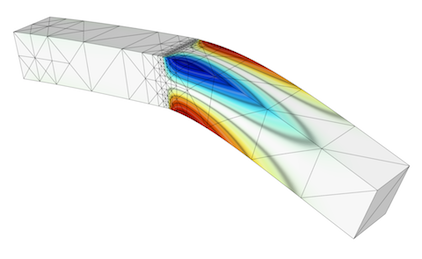
This is a version of Example 2 with a simple adaptive mesh refinement loop. The problem being solved is again linear elasticity describing a multi-material cantilever beam. The problem is solved on a sequence of meshes which are locally refined in a conforming (triangles, tetrahedrons) or non-conforming (quadrilaterals, hexahedra) manner according to a simple ZZ error estimator.
The example demonstrates MFEM's capability to work with both conforming and nonconforming refinements, in 2D and 3D, on linear and curved meshes. Interpolation of functions from coarse to fine meshes, as well as persistent GLVis visualization are also illustrated.
The example has a serial (ex21.cpp) and a parallel (ex21p.cpp) version. We recommend viewing Examples 2 and 6 before viewing this example.
Example 22: Complex Linear Systems
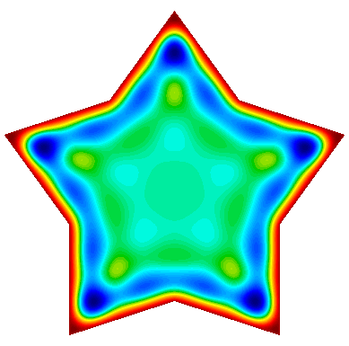
This example code demonstrates the use of MFEM to define and solve a complex-valued linear system. It implements three variants of a damped harmonic oscillator:
-
A scalar H1 field: −∇⋅(a∇u)−ω2bu+iωcu=0
-
A vector H(Curl) field: ∇×(a∇×→u)−ω2b→u+iωc→u=0
-
A vector H(Div) field: −∇(a∇⋅→u)−ω2b→u+iωc→u=0
In each case the field is driven by a forced oscillation, with angular frequency ω, imposed at the boundary or a portion of the boundary.
The example also demonstrates how to display a time-varying solution as a sequence of fields sent to a single GLVis socket.
The example has a serial (ex22.cpp) and a parallel (ex22p.cpp) version. We recommend viewing examples 1, 3, and 4 before viewing this example.
Example 23: Wave Problem

This example code solves a simple 2D/3D wave equation with a second order time derivative: ∂2u∂t2−c2Δu=0
The example demonstrates the use of time dependent operators, implicit solvers and second order time integration.
The example has only a serial (ex23.cpp) version. We recommend viewing examples 9 and 10 before viewing this example.
Example 24: Mixed finite element spaces
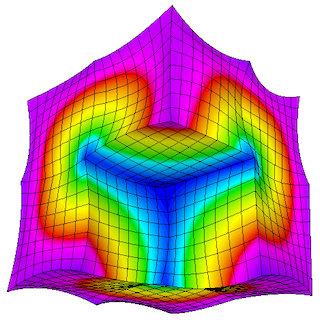
This example code illustrates usage of mixed finite element spaces. Using two different approaches, we project a gradient of a function in H1 to H(curl). Other spaces and example computations are to be added in the future.
We also illustrate usage of a DiscreteLinearOperator and a DiscreteInterpolator to interpolate a gradient in an H(curl) finite element space.
The example has a serial (ex24.cpp) and a parallel (ex24p.cpp) version. Partial assembly and GPU devices are supported. We recommend viewing examples 1 and 3 before viewing this example.
Volta Miniapp: Electrostatics
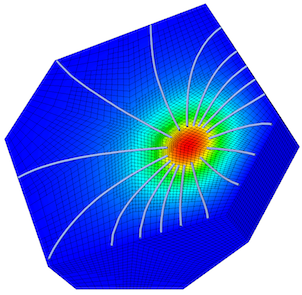
This miniapp demonstrates the use of MFEM to solve realistic problems in the field of linear electrostatics. Its features include:
- dielectric materials
- charge densities
- surface charge densities
- prescribed voltages
- applied polarizations
- high order meshes
- high order basis functions
- adaptive mesh refinement
- advanced visualization
For more details, please see the documentation in the
miniapps/electromagnetics directory.
The miniapp has only a parallel (volta.cpp) version. We recommend that new users start with the example codes before moving to the miniapps.
Tesla Miniapp: Magnetostatics
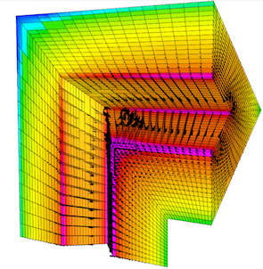
This miniapp showcases many of MFEM's features while solving a variety of realistic magnetostatics problems. Its features include:
- diamagnetic and/or paramagnetic materials
- ferromagnetic materials
- volumetric current densities
- surface current densities
- external fields
- high order meshes
- high order basis functions
- adaptive mesh refinement
- advanced visualization
For more details, please see the documentation in the
miniapps/electromagnetics directory.
The miniapp has only a parallel (tesla.cpp) version. We recommend that new users start with the example codes before moving to the miniapps.
Maxwell Miniapp: Transient Full-Wave Electromagnetics
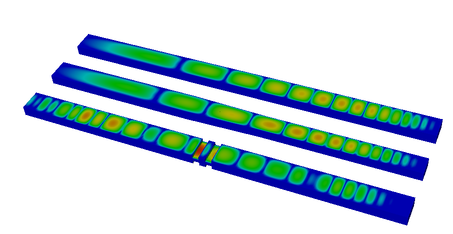
This miniapp solves the equations of transient full-wave electromagnetics.
Its features include:
- mixed formulation of the coupled first-order Maxwell equations
- H(curl) discretization of the electric field
- H(div) discretization of the magnetic flux
- energy conserving, variable order, implicit time integration
- dielectric materials
- diamagnetic and/or paramagnetic materials
- conductive materials
- volumetric current densities
- Sommerfeld absorbing boundary conditions
- high order meshes
- high order basis functions
- advanced visualization
For more details, please see the documentation in the
miniapps/electromagnetics directory.
The miniapp has only a parallel (maxwell.cpp) version. We recommend that new users start with the example codes before moving to the miniapps.
Joule Miniapp: Transient Magnetics and Joule Heating
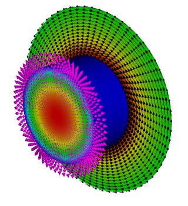
This miniapp solves the equations of transient low-frequency (a.k.a. eddy current) electromagnetics, and simultaneously computes transient heat transfer with the heat source given by the electromagnetic Joule heating.
Its features include:
- H1 discretization of the electrostatic potential
- H(curl) discretization of the electric field
- H(div) discretization of the magnetic field
- H(div) discretization of the heat flux
- L2 discretization of the temperature
- implicit transient time integration
- high order meshes
- high order basis functions
- adaptive mesh refinement
- advanced visualization
For more details, please see the documentation in the
miniapps/electromagnetics directory.
The miniapp has only a parallel (joule.cpp) version. We recommend that new users start with the example codes before moving to the miniapps.
Mobius Strip Miniapp
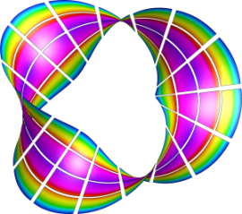
This miniapp generates various Mobius strip-like surface meshes. It is a good way to generate complex surface meshes.
Manipulating the mesh topology and performing mesh transformation are demonstrated.
The mobius-strip mesh in the data directory was generated with this miniapp.
For more details, please see the documentation in the
miniapps/meshing directory.
The miniapp has only a serial (mobius-strip.cpp) version. We recommend that new users start with the example codes before moving to the miniapps.
Klein Bottle Miniapp
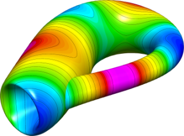
This miniapp generates three types of Klein bottle surfaces. It is similar to the mobius-strip miniapp.
Manipulating the mesh topology and performing mesh transformation are demonstrated.
The klein-bottle and klein-donut meshes in the data directory were generated with this miniapp.
For more details, please see the documentation in the
miniapps/meshing directory.
The miniapp has only a serial (klein-bottle.cpp) version. We recommend that new users start with the example codes before moving to the miniapps.
Toroid Miniapp
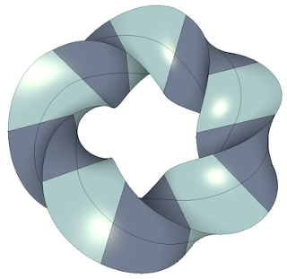
This miniapp generates two types of toroidal volume meshes; one with triangular cross sections and one with square cross sections. It works by defining a stack of individual elements and bending them so that the bottom and top of the stack can be joined to form a torus. It supports various options including:
- The element type: 0 - Wedge, 1 - Hexahedron
- The geometric order of the elements
- The major and minor radii
- The number of elements in the azimuthal direction
- The number of nodes to offset by before rejoining the stack
- The initial angle of the cross sectional shape
- The number of uniform refinement steps to apply
Along with producing some visually interesting meshes, this miniapp demonstrates how simple 3D meshes can be constructed and transformed in MFEM. It also produces a family of meshes with simple but non-trivial topology for testing various features in MFEM.
This miniapp has only a serial (toroid.cpp) version. We recommend that new users start with the example codes before moving to the miniapps.
Extruder Miniapp
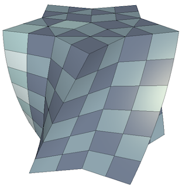
This miniapp creates higher dimensional meshes from lower dimensional meshes by extrusion. Simple coordinate transformations can also be applied if desired.
- The initial mesh can be 1D or 2D
- 1D meshes can be extruded in both the y and z directions
- 2D meshes can be triangular, quadrilateral, or contain both element types
- Meshes with high order geometry are supported
- User can specify the number of elements and the distance to extrude
- Geometric order of the transformed mesh can be user selected or automatic
This miniapp provides another demonstration of how simple meshes can be constructed and transformed in MFEM.
This miniapp has only a serial (extruder.cpp) version. We recommend that new users start with the example codes before moving to the miniapps.
Shaper Miniapp
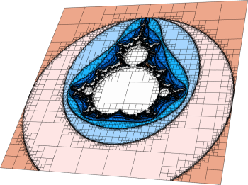
This miniapp performs multiple levels of adaptive mesh refinement to resolve the interfaces between different "materials" in the mesh, as specified by a given material function.
It can be used as a simple initial mesh generator, for example in the case when the interface is too complex to describe without local refinement. Both conforming and non-conforming refinements are supported.
For more details, please see the documentation in the
miniapps/meshing directory.
The miniapp has only a serial (shaper.cpp) version. We recommend that new users start with the example codes before moving to the miniapps.
Mesh Explorer Miniapp
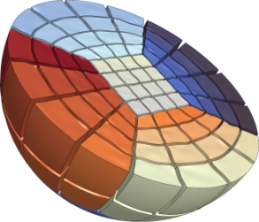
This miniapp is a handy tool to examine, visualize and manipulate a given mesh. Some of its features are:
- visualizing of mesh materials and individual mesh elements
- mesh scaling, randomization, and general transformation
- manipulation of the mesh curvature
- the ability to simulate parallel partitioning
- quantitative and visual reports of mesh quality
For more details, please see the documentation in the
miniapps/meshing directory.
The miniapp has only a serial (mesh-explorer.cpp) version. We recommend that new users start with the example codes before moving to the miniapps.
Mesh Optimizer Miniapp
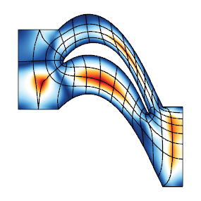
This miniapp performs mesh optimization using the Target-Matrix Optimization Paradigm (TMOP) by P.Knupp et al., and a global variational minimization approach. It minimizes the quantity
∑T∫Tμ(J(x)),
where T are the target (ideal) elements, J is the Jacobian of the transformation from the target to the physical element, and μ is the mesh quality metric.
This metric can measure shape, size or alignment of the region around each quadrature point. The combination of targets and quality metrics is used to optimize the physical node positions, i.e., they must be as close as possible to the shape / size / alignment of their targets.
This code also demonstrates a possible use of nonlinear operators, as well as their coupling to Newton methods for solving minimization problems. Note that the utilized Newton methods are oriented towards avoiding invalid meshes with negative Jacobian determinants. Each Newton step requires the inversion of a Jacobian matrix, which is done through an inner linear solver.
For more details, please see the documentation in the
miniapps/meshing directory.
The miniapp has a serial (mesh-optimizer.cpp) and a parallel (pmesh-optimizer.cpp) version. We recommend that new users start with the example codes before moving to the miniapps.
Low-Order Refined Transfer Miniapp
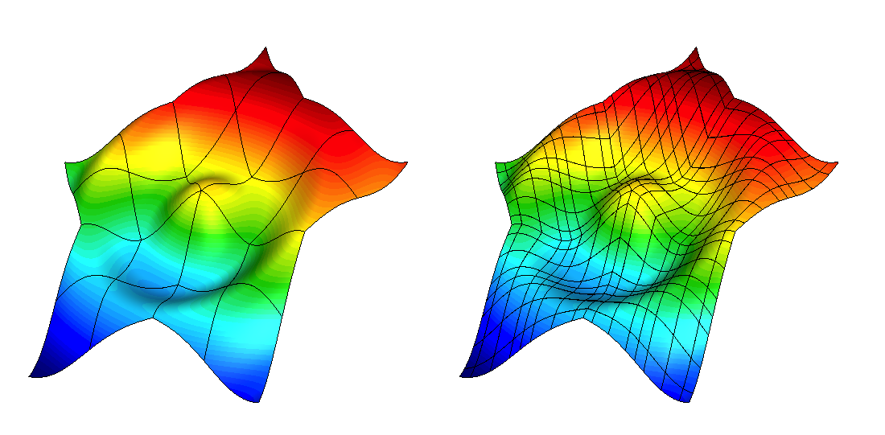
The lor-transfer miniapp, found under miniapps/tools demonstrates the
capability to generate a low-order refined mesh from a high-order mesh, and to
transfer solutions between these meshes.
Grid functions can be transferred between the coarse, high-order mesh and the low-order refined mesh using either L2 projection or pointwise evaluation. These transfer operators can be designed to discretely conserve mass and to recover the original high-order solution when transferring a low-order grid function that was obtained by restricting a high-order grid function to the low-order refined space.
The miniapp has only a serial (lor-transfer.cpp) version. We recommend that new users start with the example codes before moving to the miniapps.
Interpolation Miniapps
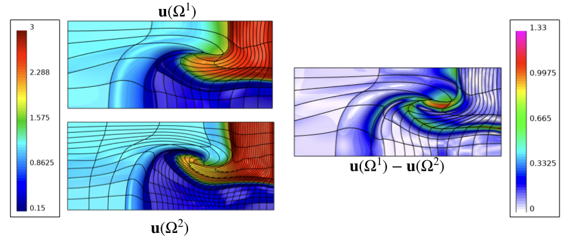
The interpolation miniapp, found under miniapps/gslib, demonstrate the
capability to interpolate high-order finite element functions at given set of
points in physical space.
These miniapps utilize the gslib library's
high-order interpolation utility for quad and hex meshes.
The Find Points miniapp has a serial
(findpts.cpp)
and a parallel
(pfindpts.cpp)
version that demonstrate the basic procedures for point search and evaluation
of grid functions.
The Field Diff miniapp
(field-diff.cpp)
demonstrates how grid functions on two different meshes can be compared with
each other.
These miniapps require installation of the gslib library. We recommend that new users start with the example codes before moving to the miniapps.
Laghos Miniapp
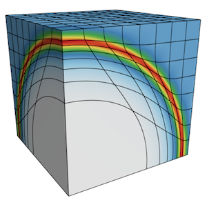
Laghos (LAGrangian High-Order Solver) is a miniapp that solves the time-dependent Euler equations of compressible gas dynamics in a moving Lagrangian frame using unstructured high-order finite element spatial discretization and explicit high-order time-stepping.
The computational motives captured in Laghos include:
- Support for unstructured meshes, in 2D and 3D, with quadrilateral and hexahedral elements (triangular and tetrahedral elements can also be used, but with the less efficient full assembly option). Serial and parallel mesh refinement options can be set via a command-line flag.
- Explicit time-stepping loop with a variety of time integrator options. Laghos supports Runge-Kutta ODE solvers of orders 1, 2, 3, 4 and 6.
- Continuous and discontinuous high-order finite element discretization spaces of runtime-specified order.
- Moving (high-order) meshes.
- Separation between the assembly and the quadrature point-based computations.
- Point-wise definition of mesh size, time-step estimate and artificial viscosity coefficient.
- Constant-in-time velocity mass operator that is inverted iteratively on each time step. This is an example of an operator that is prepared once (fully or partially assembled), but is applied many times. The application cost is dominant for this operator.
- Time-dependent force matrix that is prepared every time step (fully or partially assembled) and is applied just twice per "assembly". Both the preparation and the application costs are important for this operator.
- Domain-decomposed MPI parallelism.
- Optional in-situ visualization with GLVis and data output for visualization / data analysis with VisIt.
The Laghos miniapp is part of the CEED software suite, a collection of software benchmarks, miniapps, libraries and APIs for efficient exascale discretizations based on high-order finite element and spectral element methods. See http://github.com/ceed for more information and source code availability.
This is an external miniapp, available at https://github.com/CEED/Laghos.